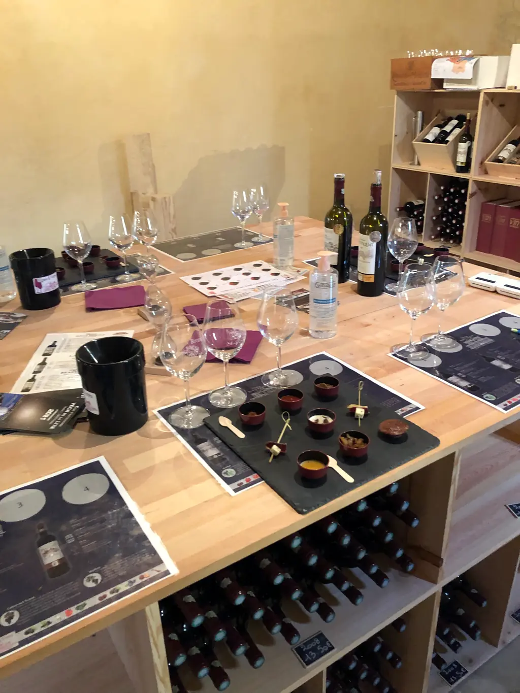

01
Visite du Château Haut-PiquatChâteau Haut-Piquat tour
- Visite guidée du châteauGuided tour of the château
- Découverte de l'évolution des chais et du processus de vinificationHow the cellars and winemaking process have evolved
- Dégustation de 2 vinsTasting of 2 wines
Seule formule réservable en ligne sur le site actuel.The only experience bookable online on the current website.